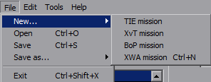
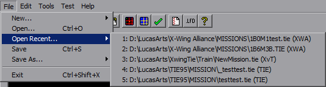
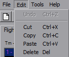
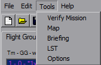
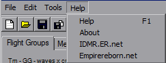

Menu
Really there aren't any tricks to the menu, just the usual stuff. ("Test" and "Open Recent" are always there now, I just didn't update every single picture in this help file after adding them).

From any platform you can open any platform and save as any platform. Using 'Ctrl+N' will start a new mission in the current platform you're using. 'Open' works across all platforms. For 'Save as...', Platform downgrades (ie, saving a XWA mission as TIE) are handled internally and there's a lot of error checking. Platform upgrades (ie, TIE to XWA) currently are done through Converter.exe although someday that'll be internal as well.

Added in version 1.2 is the "Open Recent..." menu. It will list the last five missions opened, with full path and platform. If the mission no longer exists at that location, a message box will notify you it's gone and you'll be facing a blank mission.

The Edit menu is simple, the Copy/Paste are context-sensitive. 'Undo' is disabled because I haven't implemented it yet, and I'll get around to it eventually. Maybe.
As of v1.11.2, the Copy/Paste works with Waypoints, will paste triggers/order cross-platform, and uses the system clipboard allowing pasting outside text into YOGEME, and copies a relevant text string for pasting outside of YOGEME as well.

'Verify Mission' runs 'MissionVerify.exe', which looks for common mistakes, errors and design oversights. Really I made that for GE Combat Chamber submissions. The remaining five tools open their respective dialogs. For TIE95, 'LST' changes to 'LFD'.
'FG Goal Summary' is new to v1.3, which produces a summary dialog of Flightgroup-specific goals.
'Hyperbuoy Wizard' is new to v1.4 for XWA, which helps with buoy creation automation.
'Hook Assignment' is new to v1.6 for XWA, to aid in application of installed hooks.
'Wave Manager' is new to v1.9 for XWA (possibly others later) to replace the sounds played for mission message, both in-flight and briefings.
'Mission Craft List' is new to 1.10 for XWA, will display the craft list shown prior to briefings.
Added in version 1.2, the 'Test' menu item saves the mission and associated Verify if necessary, then configures the platform to launch the mission. In 1.8.1, this was moved under the 'Tools' menu. YOGEME will backup the current state of the platform and make the required edits. A new pilot file will be created named "Test" (plus an incremented number if they are not deleted afterwards) and will be ready to fly.
For TIE, YOGEME will setup to use Battle 1, Mission 1 and join the battle, such that you only have to enter the hanger to go straight to the mission. If you are using Windows 7, YOGEME will automatically kill "explorer.exe" before TIE is run and will restart the process afterwards. This solves the color issues due to TIE not knowing how to hide the W7 start menu.
For XvT and BoP, YOGEME will set the mission as the first Imperial training mission. The mission title will be the file name and the mission description will be the file name prefixed with "YOGEME:"
For XWA, YOGEME will set the mission as number 7, which is the first mission held in the Rebel Cruiser. From here it depends on the mission setup as to where you launch from.
The first time the 'Test' item is used, a confirmation dialog will appear. If you choose to hide this dialog, it can be re-enabled on the Options dialog.

'Help' opens this, but you probably figured that out already. 'About' shows a small dialog with some contact info and the version number. The last two entries open their respective websites.